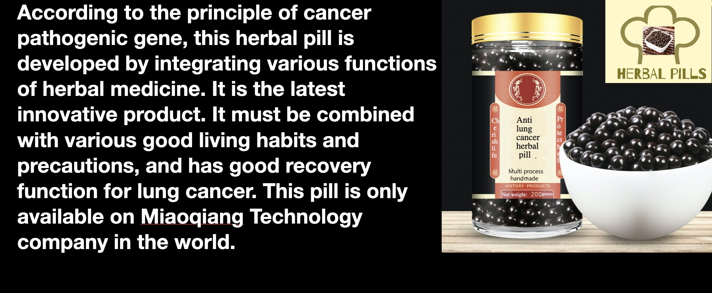
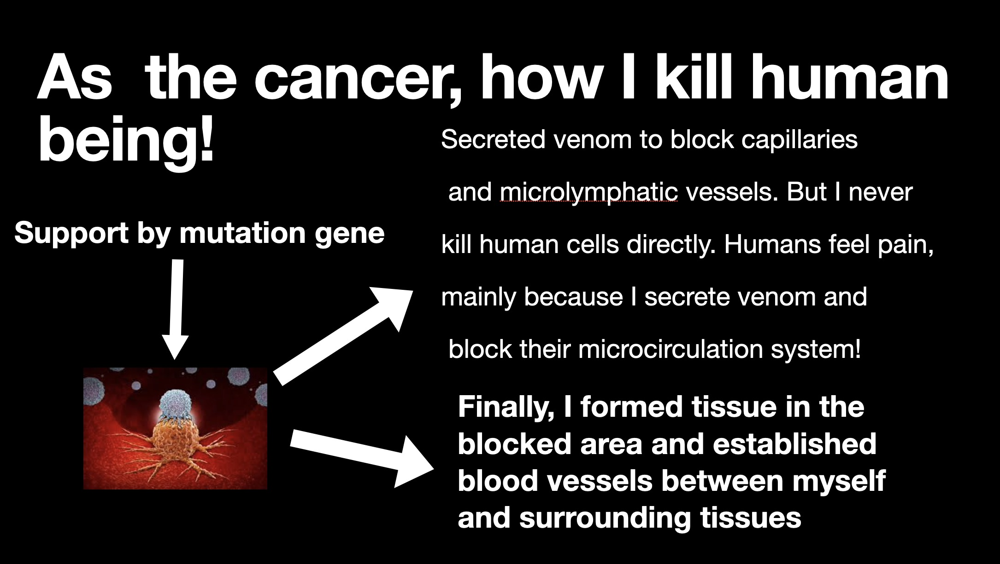

the road cure cancer by chinese herbs.
Sep20, 2020

Special attention should be paid to the treatment of cancer patients with Chinese medicine!.
1: Avoid stressful work and emotions, and pay special attention not to bring tension to rest.
For example, nervousness when sleeping, and nervousness when tired. You can listen to music and take a cold shower to soothe your emotions.
2: In the morning, take Angelica sinensis, Ligusticum chuanxiong, Sanleng, peach kernel or safflower to invigorate and promote blood circulation to avoid clogged microcirculation and internal organ failure.
3: Take Liuwei Dihuang Pills, milk thistle and other traditional Chinese medicines that nourish liver and kidney to improve liver and kidney function.
4: Pay attention to nutrition and improve immunity.
As the cancer, how I kill human being!
Dec 20, 2020

Two parts of the body are "itchy". Don't mistake it for an allergy or a sign of liver cancer. Be alert
The liver is the "first of the five internal organs". It can not only synthesize, secrete, and metabolize, but also detoxify and detoxify, which is very important to the human body.
However, the liver is also a well-known "painless" organ. If it is abnormal, it will not feel particularly obvious. Therefore, in order to effectively care for the health of the liver, in addition to having a good diet and living habits, we must also pay more attention to abnormalities in the body, or to quickly find liver disease.
Two parts of the body are "itchy". Don't mistake it for an allergy or a sign of liver cancer. Be alert
1. Itchy skin
Skin itching is generally considered to be caused by allergies or mosquito bites, but if itching occurs suddenly within a period of time, or it is a signal before liver cancer is coming, pay attention.
After the liver disease occurs, the body's metabolic capacity will be reduced to a certain extent, and the bile cannot be smoothly sent to the intestines and stomach to help digestion. When too much cholestasis is accumulated in the gallbladder, a part of it will enter the blood and follow the blood circulation throughout the body. When the bile salts in the bile take the opportunity to gather under the skin, it will stimulate the nerve endings and cause inexplicable itching of the skin.
2. Itchy eyes
Eyes are the weaker parts of the body. If you use your eyes for a long time and do not pay attention to rest, your eyes will become dry and itchy. However, if you use your eyes normally, your eyes will still be abnormal, or liver cancer will come to your home.
After the liver develops a problem, the blood storage capacity will decrease, and the liver blood will be insufficient, so that the eyes will not receive sufficient blood nourishment, and the eyes will appear dry and itchy.
Why is liver cancer more and more? The doctor said bluntly: these 3 foods are not superficial to the liver, so avoid them as soon as possible
1. Moldy food
Moldy food is a gathering place for a large number of bacteria and fungi, and it also contains a strong carcinogen aflatoxin. If you encounter this kind of food, don't be reluctant to throw it away. Just cut off the moldy place and continue eating the rest. This will pose a serious safety hazard.
Studies have shown that intake of 1 mg of aflatoxin will cause a large number of liver cell deaths and liver disease. For good health, always pay attention to throw away moldy food as soon as possible.
2. Long-bubble fungi
Fungus, which contains a lot of nutrients, is also a food that people often eat. However, attention should be paid to the way of eating this kind of food. Improper way of eating will make it a "liver-damaging weapon."
For example, the common fungus is bought dry in general households and soaked when eating. However, if the soaking time is too long, it is easy to be contaminated by bacteria in the air and breed the toxic substance rice yeast. Once this substance enters the human body, it will cause great damage to the liver, causing massive lesions and necrosis of liver cells, and in severe cases, liver cancer.
3. Alcoholic drinks
Alcohol is a must-have drink for social occasions, but if you don’t control the amount of alcohol you drink, it will also cause great damage to your liver.
The liver is the main place for alcohol metabolism. 90% of the alcohol you drink can be catabolized and metabolized with the help of the liver. If you drink frequently, the liver will be overloaded with work and liver function will be affected. In addition, the main ingredient in wine is ethanol. After it enters the human body and is decomposed, it will form acetaldehyde that can damage liver cells and cause rapid liver disease.
The most important thing is to prevent the liver as early as possible. It is recommended to do these 3 things
1. Drink plenty of water
Drinking water can replenish body fluids and create a humid metabolic environment for the liver, allowing the liver to work efficiently. Drinking plenty of water can also help repair liver cells and make the liver healthier.
For people with poor liver, the effect of drinking plain water is not high. You can also put two or three PTZ ice chrysanthemums in the water cup to double the effect.
Yuntai ice chrysanthemum is a subspecies of Huai chrysanthemum produced in the ancient Huaiqing Mansion (Jiaozuo, Henan). It contains selenium, choline, flavonoids and other liver-nourishing ingredients. It is also known as the "king of chrysanthemum".
Medical certificate:
Selenium can accelerate the metabolism of toxins, increase the metabolic rate of the liver, and protect liver health;
Choline can quickly metabolize fat and reduce the burden on the liver. It is known as a "hepatic expert";
Flavonoids can quickly scavenge free radicals in the body and reduce the chance of liver cell damage.
Drinking 1 cup every day after meals can help the liver to metabolize faster and effectively improve liver function. The liver will appreciate you.
2. Exercise more
Exercise is good for the body. Regular exercise can not only promote blood circulation, quickly clear out garbage and toxins in the body, reduce siltation, but also improve the liver's ability to resist harmful substances and reduce the chance of liver disease.
It is best to stick to one hour of exercise every day, and choose aerobic exercises that suit you, such as running, yoga, Tai Chi, etc. These exercises are relatively low in intensity, and can quickly consume excess fat and have a good liver maintenance effect. .
3. Eat a balanced diet and eat less greasy
As the saying goes: All diseases come out of the mouth, and the development of scientific eating habits is of great benefit to the body.
In normal meals, you should ensure a balanced intake of various nutrients. Don't be picky eaters, don't eat too oily, and try to eat more vegetables. Vegetables contain a lot of cellulose, which can help the body digest, expel fat and garbage in the body, reduce the burden on the liver, and maintain liver vitality.